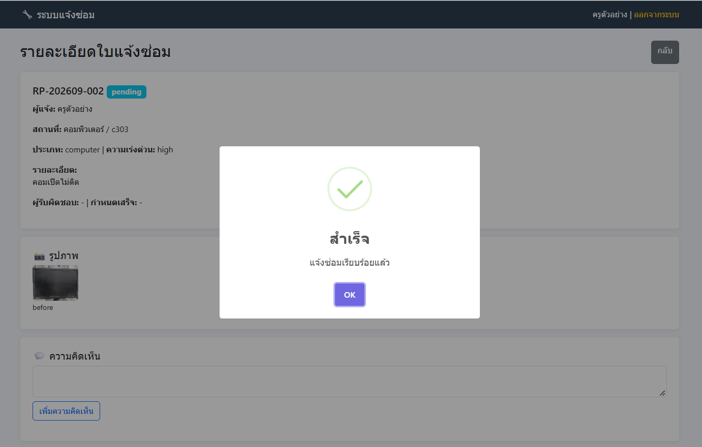
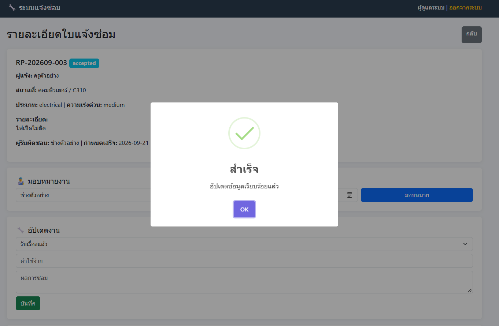
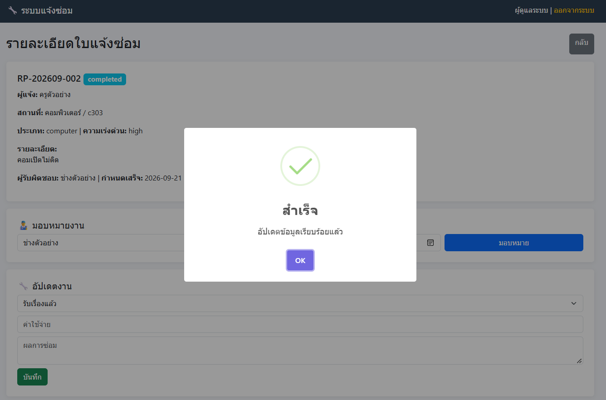

รายวิชา: การพัฒนาเว็บแอปพลิเคชัน (Web Application Development)
ชื่อ-นามสกุล: นางสาวปภัสสร แย้มชื่น รหัสนักศึกษา: 674230034
กลุ่ม: 67/44
วันที่ส่ง: ........................... คะแนน: .........../100
📋 ส่วนที่ 1: ความต้องการของระบบ (System Requirements)
🎯 ปัญหาและแนวทางแก้ไข
ในโรงเรียนมีปัญหาเกี่ยวกับการแจ้งซ่อมอุปกรณ์ต่างๆ เช่น:
- 💡 ไฟในห้องเรียนไม่ติด แต่ไม่รู้ว่าใครรับผิดชอบ
- ❄️ แอร์ไม่เย็น แจ้งไปแล้วแต่ไม่รู้ว่าซ่อมถึงขั้นตอนไหน
- 🖥️ คอมพิวเตอร์ใช้งานไม่ได้ ไม่มีประวัติการซ่อมย้อนหลัง
ระบบนี้จะช่วย: รวบรวมงานซ่อมไว้ในที่เดียว ตั้งแต่แจ้งปัญหา มอบหมายเจ้าหน้าที่
ติดตามความคืบหน้า ไปจนถึงบันทึกผลการซ่อม พร้อมประวัติให้ตรวจสอบย้อนหลัง
✨ ฟังก์ชันหลักของระบบ
- 🔐 ระบบสิทธิ์: แยกสิทธิ์ผู้ดูแล (Admin), ครู/บุคลากร (Teacher),
และเจ้าหน้าที่ซ่อม (Technician)
- 📝 แจ้งซ่อม: ระบุอาคาร ห้อง ประเภทปัญหา และความเร่งด่วน
- 📸 แนบรูปภาพ: ภาพก่อน-หลังซ่อม เพื่อเห็นรายละเอียดชัดเจน
- 👨🔧 มอบหมายงาน: กำหนดผู้รับผิดชอบ พร้อมวันเสร็จที่กำหนด
- 💬 แสดงความคิดเห็น: เพิ่มข้อความสอบถามและข้อมูลประกอบในใบแจ้งซ่อม
- 💰 บันทึกค่าใช้จ่าย: บันทึกผลการแก้ไขและค่าใช้จ่ายในการซ่อม
- 📊 Dashboard: สรุปงาน พร้อมค้นหา กรองข้อมูล และส่งออก CSV
- 🖨️ พิมพ์/PDF: พิมพ์ใบแจ้งซ่อม A4 หรือบันทึกเป็น PDF
📌 ขั้นตอนการทำงาน (Workflow)
📥 รอรับเรื่อง
→
✓ รับเรื่องแล้ว
→
🔧 กำลังดำเนินการ
→
✅ ซ่อมเสร็จ
คำถามที่ 1.1
จงระบุ User Roles ทั้ง 3 ประเภท และอธิบายสิทธิ์การเข้าถึงข้อมูลของแต่ละบทบาท
Admin จัดการผู้ใช้และข้อมูลทั้งหมดในระบบ Teacher แจ้งซ่อม ดูรายการ
และติดตามสถานะ Technician รับงานซ่อม อัปเดตสถานะ และบันทึกผลการซ่อม
คำถามที่ 1.2
จงสกัดคำนาม (Noun Extraction) จากโจทย์ความต้องการด้านบน
เพื่อระบุคลาสที่ควรสร้างในระบบ (เช่น RepairRequest, User, Comment) และคำนามที่ไม่ควรสร้างเป็นคลาส
พร้อมอธิบายเหตุผล
คลาสที่ควรสร้าง User, RepairRequest, Comment,
RepairImage
สิ่งที่ไม่ควรสร้างเป็นคลาส อาคาร, ห้อง, สถานะ เพราะเป็นข้อมูล/คุณสมบัติของใบแจ้งซ่อม
🏗️ ส่วนที่ 2: การออกแบบฐานข้อมูล (Database Design)
📊 โครงสร้างฐานข้อมูล (Database Schema)
1. users (ผู้ใช้งานระบบ)
├─ id (INT, PK)
├─ username (VARCHAR)
├─ password (VARCHAR)
├─ fullname (VARCHAR)
├─ role (ENUM: 'admin', 'teacher', 'technician')
├─ email (VARCHAR)
└─ created_at (TIMESTAMP)
2. repair_requests (ใบแจ้งซ่อม)
├─ id (INT, PK)
├─ request_no (VARCHAR) - รหัสใบแจ้งซ่อม
├─ user_id (INT, FK → users)
├─ building (VARCHAR) - อาคาร
├─ room (VARCHAR) - ห้อง
├─ problem_type (ENUM: 'electrical', 'furniture', 'computer', 'aircon', 'other')
├─ description (TEXT) - รายละเอียดปัญหา
├─ urgency (ENUM: 'low', 'medium', 'high')
├─ status (ENUM: 'pending', 'accepted', 'in_progress', 'completed')
├─ assigned_to (INT, FK → users, NULL)
├─ due_date (DATE, NULL)
├─ completion_date (DATE, NULL)
├─ cost (DECIMAL, NULL)
├─ result (TEXT, NULL) - ผลการซ่อม
└─ created_at (TIMESTAMP)
3. repair_images (รูปภาพประกอบ)
├─ id (INT, PK)
├─ repair_id (INT, FK → repair_requests)
├─ image_type (ENUM: 'before', 'after')
├─ image_path (VARCHAR)
└─ uploaded_at (TIMESTAMP)
4. comments (ความคิดเห็น)
├─ id (INT, PK)
├─ repair_id (INT, FK → repair_requests)
├─ user_id (INT, FK → users)
├─ comment (TEXT)
└─ created_at (TIMESTAMP)
คำถามที่ 2.1
จงเขียน SQL CREATE TABLE สำหรับตาราง repair_requests พร้อมกำหนด Foreign
Key Constraints
CREATE TABLE repair_requests (
id INT PRIMARY KEY AUTO_INCREMENT,
request_no VARCHAR(50),
user_id INT,
building VARCHAR(100),
room VARCHAR(50),
problem_type VARCHAR(50),
description TEXT,
urgency VARCHAR(20),
status VARCHAR(20),
assigned_to INT NULL,
due_date DATE NULL,
completion_date DATE NULL,
cost DECIMAL(10,2) NULL,
result TEXT NULL,
created_at TIMESTAMP DEFAULT CURRENT_TIMESTAMP,
FOREIGN KEY (user_id) REFERENCES users(id),
FOREIGN KEY (assigned_to) REFERENCES users(id)
);
คำถามที่ 2.2
จงอธิบายความสัมพันธ์ (Relationships) ระหว่างตารางต่างๆ พร้อมระบุ Cardinality (1:1,
1:N, M:N) และอธิบายว่าเหตุใดจึงแยกตาราง repair_images ออกจาก
repair_requests
1. users → repair_requests = 1:N
2. repair_requests → repair_images = 1:N
3. repair_requests → comments = 1:N
4. แยก repair_images เพราะ 1 ใบแจ้งซ่อมสามารถมีหลายรูป และเพิ่มรูปได้ง่ายโดยไม่ต้องเพิ่มคอลัมน์ใหม่
💻 ส่วนที่ 3: การพัฒนาด้วย PHP 8 (PHP Implementation)
🔧 ตัวอย่างโค้ด: คลาส RepairRequest
<?php
class RepairRequest {
private int $id;
private string $requestNo;
private int $userId;
private string $building;
private string $room;
private string $problemType;
private string $description;
private string $urgency;
private string $status;
private ?int $assignedTo;
private ?string $dueDate;
private ?float $cost;
public function __construct(
int $id,
string $requestNo,
int $userId,
string $building,
string $room,
string $problemType,
string $description,
string $urgency = 'medium',
string $status = 'pending'
) {
$this->id = $id;
$this->requestNo = $requestNo;
$this->userId = $userId;
$this->building = $building;
$this->room = $room;
$this->problemType = $problemType;
$this->description = $description;
$this->urgency = $urgency;
$this->status = $status;
$this->assignedTo = null;
$this->dueDate = null;
$this->cost = null;
}
// Getters
public function getId(): int { return $this->id; }
public function getRequestNo(): string { return $this->requestNo; }
public function getStatus(): string { return $this->status; }
// Business Logic Methods
public function assignTo(int $technicianId, string $dueDate): void {
$this->assignedTo = $technicianId;
$this->dueDate = $dueDate;
$this->status = 'accepted';
}
public function startRepair(): void {
if ($this->status !== 'accepted') {
throw new Exception('Cannot start repair: Request not accepted yet');
}
$this->status = 'in_progress';
}
public function completeRepair(float $cost, string $result): void {
$this->cost = $cost;
$this->status = 'completed';
// Save result to database
}
}
?>
คำถามที่ 3.1
จากโค้ดข้างต้น จงอธิบายว่าหลักการ Encapsulation ถูกนำมาใช้อย่างไร และเหตุใดจึงใช้
?int และ ?string (Nullable Types)
Encapsulation ใช้ private ซ่อนข้อมูลภายในคลาส
และเข้าถึงผ่าน Method เช่น Getter
?int และ ?string หมายถึงสามารถเป็นค่าชนิดนั้นหรือ null ได้
คำถามที่ 3.2
จงเขียน PHP Function สำหรับสร้างรหัสใบแจ้งซ่อมอัตโนมัติ (Format: RP-YYYYMM-XXX เช่น
RP-202401-001)
function generateRequestNo($number) {
return 'RP-' . date('Ym') . '-' . str_pad($number, 3, '0', STR_PAD_LEFT);
}
คำถามที่ 3.3
จงอธิบาย State Transition ของ status ในคลาส RepairRequest
ว่าเปลี่ยนจาก pending → accepted → in_progress → completed ได้อย่างไร
และเหตุใดจึงต้องมีเงื่อนไขตรวจสอบใน method startRepair()
pending → accepted → in_progress → completed
ต้องตรวจสอบใน startRepair() เพื่อไม่ให้เริ่มซ่อมก่อนที่งานจะถูกกดรับ
🎨 ส่วนที่ 4: การออกแบบอินเทอร์เฟซ (UI/UX Design)
📱 หน้าจอหลักของระบบ
| หน้าจอ |
ผู้ใช้ที่เข้าถึงได้ |
ฟังก์ชันหลัก |
| Dashboard |
ทุกบทบาท |
สรุปสถิติ, งานที่รับผิดชอบ |
| แจ้งซ่อมใหม่ |
ครู/บุคลากร |
กรอกข้อมูล, แนบรูปภาพ |
| รายการแจ้งซ่อม |
ทุกบทบาท |
ดูรายการ, ค้นหา, กรอง |
| รายละเอียดใบแจ้งซ่อม |
ทุกบทบาท |
ดูข้อมูล, เพิ่มความคิดเห็น, อัปเดตสถานะ |
| จัดการผู้ใช้ |
ผู้ดูแลเท่านั้น |
เพิ่ม/แก้ไข/ลบผู้ใช้ |
คำถามที่ 4.1
จงออกแบบ Wireframe ของหน้า "แจ้งซ่อมใหม่" โดยระบุองค์ประกอบหลัก (Form Fields,
Buttons, Validation)
ควรมี 1. อาคาร 2. ห้อง 3. ประเภทปัญหา 4. รายละเอียดปัญหา 5. ความเร่งด่วน 6. แนบรูปภาพ 7. ปุ่มส่งแจ้งซ่อม 8. Validation ตรวจสอบข้อมูลก่อนส่ง
🚀 ส่วนที่ 5: โจทย์ฝึกปฏิบัติ (Coding Exercise)
📦 สิ่งที่ต้องส่ง:
- ✅ ซอร์สโค้ด PHP (ไฟล์ .php ทั้งหมด)
- ✅ ฐานข้อมูล SQL (ไฟล์ .sql)
- ✅ คู่มือติดตั้ง (README.md)
- ✅ Screenshots ของหน้าจอหลัก
โจทย์ที่ 5.1
สร้างระบบ Login พร้อม Session Management และตรวจสอบสิทธิ์การเข้าถึงหน้าต่างๆ
โจทย์ที่ 5.2
สร้างหน้า Dashboard แสดงสถิติ: จำนวนงานทั้งหมด, งานที่รอดำเนินการ,
งานที่กำลังดำเนินการ, งานที่เสร็จแล้ว
โจทย์ที่ 5.3
สร้างระบบอัปโหลดรูปภาพ ก่อน-หลังซ่อม พร้อมแสดงรูปภาพในหน้ารายละเอียด
โจทย์ที่ 5.4
สร้างระบบแจ้งเตือน ด้วย SweetAlert2 เมื่อ:
• แจ้งซ่อมสำเร็จ
• มอบหมายงานสำเร็จ
• อัปเดตสถานะสำเร็จ



โจทย์ที่ 5.5 (Bonus)
สร้างระบบส่งออกข้อมูล เป็นไฟล์ CSV และสร้างฟังก์ชันพิมพ์ใบแจ้งซ่อมเป็น PDF
ระบบสามารถส่งออกข้อมูลการแจ้งซ่อมเป็นไฟล์ CSV เพื่อใช้ในการจัดเก็บและวิเคราะห์ข้อมูล และสามารถพิมพ์ใบแจ้งซ่อมเป็นไฟล์ PDF เพื่อใช้เป็นเอกสารประกอบการแจ้งซ่อม
💡 ส่วนที่ 6: คำถามที่นักศึกษาต้องการทราบ / ข้อสงสัยที่พบบ่อย (FAQ &
Clarifications)
🔍 ข้อสงสัยที่พบบ่อย (Frequently Asked Questions)
รวมคำถามที่นักศึกษามักสงสัยในการวิเคราะห์และออกแบบระบบแจ้งซ่อมโรงเรียน
พร้อมแนวคำตอบเพื่อทบทวนความเข้าใจ
❓ Q1: ทำไมต้องใช้ ENUM สำหรับฟิลด์ status และ
problem_type ในฐานข้อมูล?
แนวคำตอบ: การใช้
ENUM มีข้อดีหลายประการ:
- จำกัดค่าที่รับได้: ป้องกันการป้อนค่าที่ไม่ถูกต้อง เช่น พิมพ์ status
ผิดเป็น "pendding"
- ประหยัดพื้นที่: MySQL เก็บ ENUM เป็นตัวเลขภายใน (1 byte)
แทนที่จะเก็บเป็น string
- ความหมายชัดเจน: ทำให้ Developer
ทราบว่าระบบมีสถานะอะไรบ้างโดยไม่ต้องดูเอกสาร
- ง่ายต่อการ Query: เช่น
WHERE status = 'pending'
ไม่ต้องกลัว typo
❓ Q2: ทำไมต้องแยกตาราง repair_images ออกจาก
repair_requests? เก็บเป็น path ในตารางหลักเลยไม่ได้หรือ?
แนวคำตอบ: การแยกตารางเป็นหลักการ
Normalization (1NF) เพราะ:
- 1 ใบแจ้งซ่อม มีหลายรูป: ความสัมพันธ์เป็น 1:N (อาจมีรูปก่อนซ่อม 2 รูป,
หลังซ่อม 3 รูป)
- ยืดหยุ่น: เพิ่มรูปได้ไม่จำกัด ไม่ต้องแก้โครงสร้างตาราง
- Query ง่าย:
SELECT * FROM repair_images WHERE repair_id = ?
- ถ้าเก็บในตารางหลัก: ต้องสร้างคอลัมน์
image1, image2, image3... ซึ่งไม่ยืดหยุ่นและเสียพื้นที่
❓ Q3: ในโค้ด PHP มีสัญลักษณ์ ?int และ ?string
มันคืออะไร?
แนวคำตอบ: คือ
Nullable Types ใน PHP 8+ หมายถึง
ตัวแปรนั้นสามารถรับค่าเป็น
int (หรือ string)
หรือ ค่า
null ก็ได้ มักใช้กับ Attribute ที่ "อาจจะยังไม่มีค่า" ในช่วงแรก เช่น:
$assignedTo - เจ้าหน้าที่ที่ยังไม่ถูกมอบหมายงาน$dueDate - วันเสร็จที่ยังไม่ได้กำหนด$cost - ค่าใช้จ่ายที่ยังไม่ทราบจนกว่าจะซ่อมเสร็จ
❓ Q4: การอัปโหลดรูปภาพต้องระวังเรื่องความปลอดภัยอะไรบ้าง?
แนวคำตอบ: การอัปโหลดไฟล์เป็นจุดเสี่ยงสำคัญ ต้องตรวจสอบดังนี้:
- ตรวจสอบประเภทไฟล์: ใช้
mime_content_type() หรือ
finfo_file() ไม่ใช่แค่ $_FILES['file']['type'] (ปลอมแปลงได้)
- จำกัดขนาดไฟล์: เช่น ไม่เกิน 5 MB
- เปลี่ยนชื่อไฟล์: ใช้ UUID หรือ timestamp แทนชื่อเดิม ป้องกันการ
overwrite
- เก็บนอก webroot: หรือใช้
.htaccess ป้องกันการ execute ไฟล์
PHP ที่อัปโหลดเข้ามา
- จำกัดนามสกุล: อนุญาตเฉพาะ
.jpg, .jpeg, .png, .gif
❓ Q5: ทำไมต้องใช้ SweetAlert2 แทน alert() หรือ
confirm() ของ JavaScript?
แนวคำตอบ: SweetAlert2 มีข้อดีกว่ามาก:
- สวยงาม: UI ทันสมัย ปรับแต่งสี/ไอคอนได้
- Responsive: ใช้งานได้ทั้ง Desktop และ Mobile
- Promise-based: ใช้
async/await ได้ ทำให้จัดการ Flow ง่าย
- มีหลายประเภท: success, error, warning, info, question
- UX ดีกว่า:
alert() ดั้งเดิมจะ block thread และดูเก่า
❓ Q6: การพิมพ์เป็น PDF ต้องทำอย่างไร? ต้องใช้ Library อะไร?
แนวคำตอบ: มี 2 วิธีหลัก:
- วิธีที่ 1 - Browser Print: สร้าง CSS
@media print
แยกสำหรับพิมพ์ แล้วใช้ window.print() (ผู้ใช้เลือก "Save as PDF" ใน Print
Dialog)
- วิธีที่ 2 - PHP Library: ใช้
Dompdf หรือ
TCPDF แปลง HTML เป็น PDF ฝั่ง Server (เหมาะสำหรับส่งอีเมลแนบ PDF)
- วิธีที่ 3 - JS Library: ใช้
html2pdf.js หรือ
jsPDF แปลงฝั่ง Client
สำหรับใบงานนี้ แนะนำวิธีที่ 1 เพราะง่ายที่สุดและไม่ต้องติดตั้ง Library เพิ่มเติม
📝 พื้นที่สำหรับบันทึก "คำถามที่นักศึกษาต้องการทราบ" (Student Inquiries)
หากนักศึกษามีข้อสงสัย
หรือต้องการคำอธิบายเพิ่มเติมในประเด็นใด สามารถบันทึกไว้ที่นี่เพื่อสอบถามผู้สอนในคาบปฏิบัติได้
ข้อสงสัยที่ 1
ประเด็นที่สงสัย (เช่น เรื่อง Database Design, SQL, Normalization):
ข้อสงสัยที่ 2
ประเด็นที่สงสัย (เช่น เรื่อง PHP OOP, Session, Security):
ข้อสงสัยที่ 3
ประเด็นที่สงสัย (เช่น เรื่อง File Upload, SweetAlert2, PDF Export, UI/UX):
💡 คำแนะนำ: ใช้ PHP 8+, MySQL 5.7+, และ SweetAlert2 สำหรับ UI Components
📚 เอกสารอ้างอิง: PHP Manual, MySQL Documentation, SweetAlert2 Docs